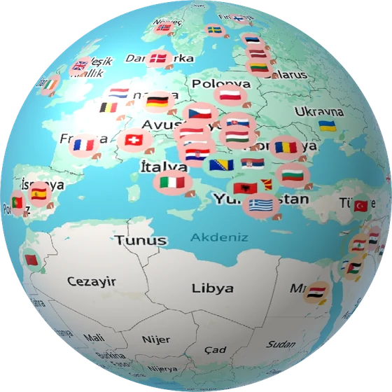
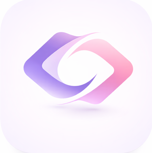
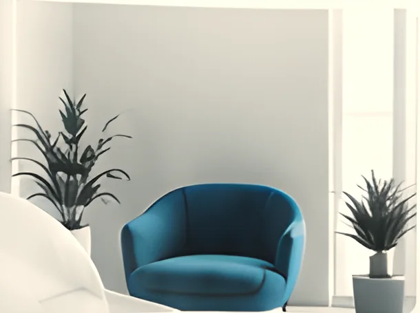

LunaPara
Finance
Income and expense tracking, emotional spending patterns and AI-powered insights.
Join the test
In closed
testing
testing

Tide Mobile
Tide Mobile is an independent product studio that studies industry insights, spots opportunities and turns them into mobile products for finance, travel and mental wellbeing.
From Adana
to the world.
Tide Mobile in numbers
How we work
We analyze user behavior and industry dynamics.
We identify real needs and develop solutions.
We turn them into mobile products that add value to people's lives.
About us
Tide Mobile takes a multidisciplinary approach to understanding human behavior, solving real needs and building digital experiences that last. We are an independent studio based in Adana, and our psychology content is approved by a licensed psychologist.
Learn MoreHuman-centered, empathetic design.
Form and function, together.
Real data, better decisions.
Built for tomorrow, not just today.
Vision and mission
Tide Mobile works toward a healthier, safer and more mindful future in which technology makes people's lives easier.
Learn More“Technology
exists for people.”
Our apps
Finance
Income and expense tracking, emotional spending patterns and AI-powered insights.
Travel
Visa requirements, political risk levels, a Schengen 90/180 calculator and access to travel insurance.

Mental Wellbeing
Psychologist-approved journeys, a mood journal, meditations and a chat companion that listens without judgment.

Cognitive Behavioral Therapy
Thought records, mood tracking and Socratic questioning based on CBT principles.
Tide Mobile in the press
At the 3rd International Export and Investment Summit (ITS 2026), our Co-Founder C. Tanıl Tabakoğlu told Haberler.com how Tide Mobile started and what Modi does.
“We want to make the first step before seeking psychological support easier.”
Our team
Co-Founder · Product & Growth
Co-Founder · Psychology & Content
Brand & Communications Lead
Visual & Web Designer
AI Engineer
2026 roadmap
Strengthening the brand foundation
Wellness and psychology product development
Growing the content and community layer
Preparing new experiences for launch
Expert support
Licensed Psychologistİlknur Yılmazgil
See Details
All for a better you
Tide Mobile combines psychology, data and design to deliver a better digital experience.
Explore the AppsTechnical partnership
We partner with agencies and brands on AI-powered mobile apps, premium UI/UX and interactive experiences.
Work With UsFrequently asked questions
Tide Mobile (Tidemobile) is an independent mobile app studio based in Adana, Türkiye. It builds Modi, a mental health app, and TerraVisa, a visa and travel planning app, bringing together psychology, data and design.
Modi (mental health, live on the App Store and Google Play), TerraVisa (visa and travel planning, live on Google Play, iOS version in App Store review), LunaPara (financial awareness, in closed testing) and Reframe (CBT-based thought records, in development).
Modi is available for free on the App Store and Google Play. Downloading and the core features are free; the optional Modi Premium adds extra content. See Modi's website for details.
We offer technical partnership to agencies and brands in mobile app development, UI/UX and interactive experiences. See the Technical Partnership page, or reach us at tidemobile.contact@gmail.com or through the form on this page.
No. Modi does not replace therapy and does not diagnose. It is a tool that supports everyday wellbeing. When risk is detected in a conversation, it directs the user to professional support such as the 112 emergency line and the 182 MHRS line in Türkiye.
TerraVisa is a travel app that shows visa requirements and political risk levels for your passport on an interactive world map. It includes a Schengen 90/180 day calculator, a visa cost calculator, a document wizard and VFS/BLS consulate appointment alerts. The app is free; an optional premium subscription adds extra features.
You can stay in the Schengen area for up to 90 days in any 180-day period. Add your entry and exit dates to TerraVisa's Schengen 90/180 calculator and it works out your remaining days automatically.
LunaPara is currently in closed testing. For early access, join the test group and become a tester on Google Play.
Contact
We're here for your questions, collaboration requests and feedback.
tidemobile.contact@gmail.comAdana, Türkiye